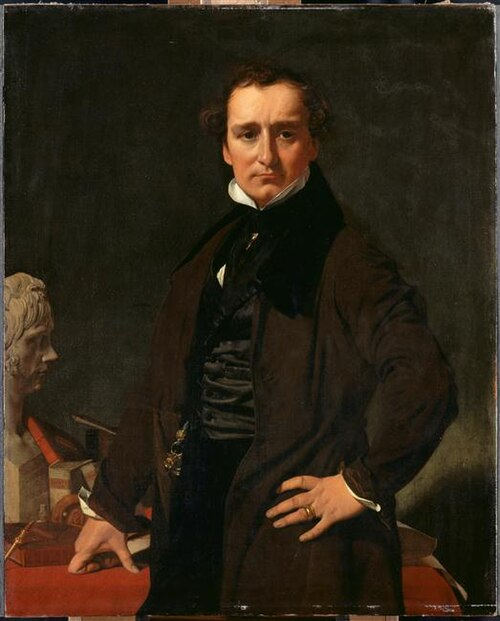
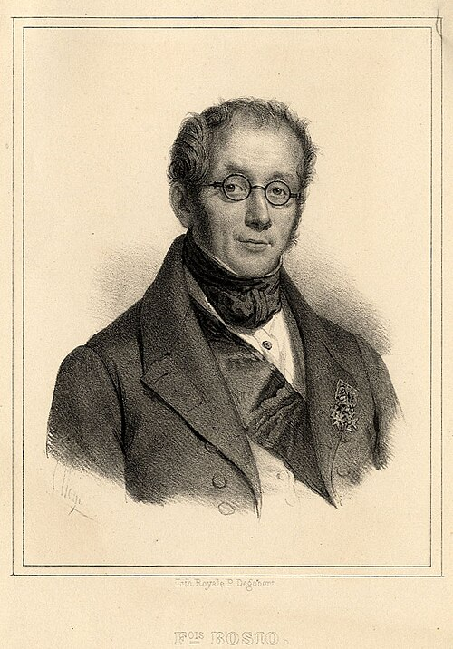
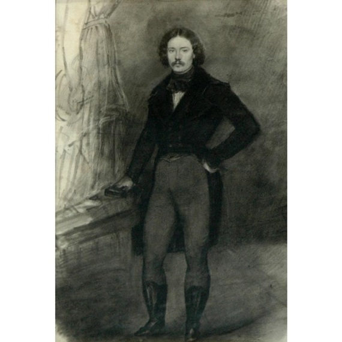
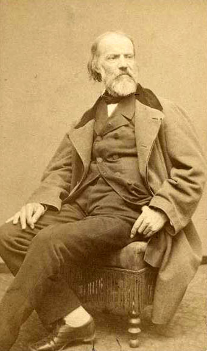
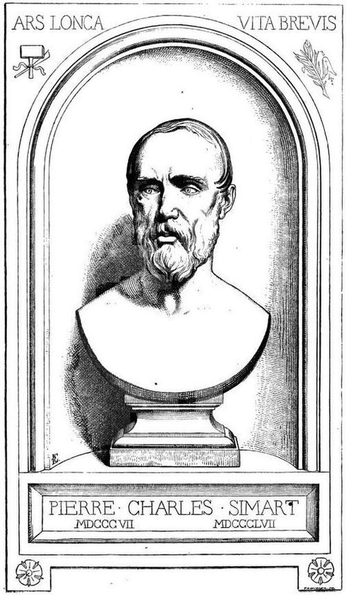
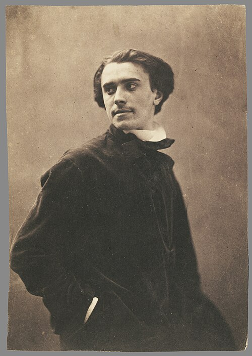
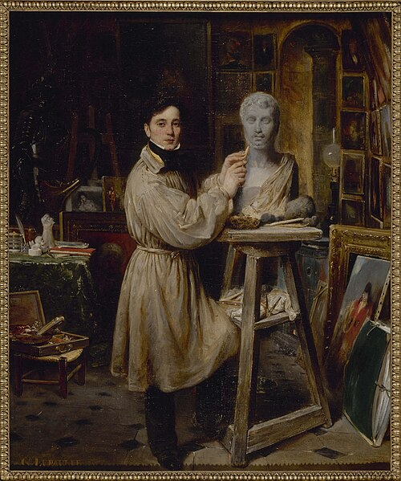
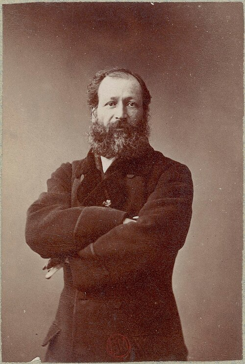

Salon de 1845
Sculpture
Sculptures
BARTOLINI
Bartolini

Nous avons le droit de nous défier à Paris des réputations étrangères. — Nos voisins nous ont si souvent pipé notre estime crédule avec des chefs-d’œuvre qu’ils ne montraient jamais, ou qui, s’ils consentaient enfin à les faire voir, étaient un objet de confusion pour eux et pour nous, que nous nous tenons toujours en garde contre de nouveaux pièges. Ce n’est donc qu’avec une excessive défiance que nous nous sommes approchés de la Nymphe au Scorpion . — Mais cette fois il nous a été réellement impossible de refuser notre admiration à l’artiste étranger. — Certes nos sculpteurs sont plus adroits, et cette préoccupation excessive du métier absorbe aujourd’hui nos sculpteurs comme nos peintres ; — or c’est justement à cause des qualités un peu mises en oubli chez les nôtres, à savoir : le goût, la noblesse, la grâce — que nous regardons l’œuvre de M. Bartolini comme le morceau capital du salon de sculpture. — Nous savons que quelques-uns des sculptiers dont nous allons parler sont très-aptes à relever les quelques défauts d’exécution de ce marbre, un peu trop de mollesse, une absence de fermeté ; bref, certaines parties veules et des bras un peu grêles ; — mais aucun d’eux n’a su trouver un aussi joli motif ; aucun d’eux n’a ce grand goût et cette pureté d’intentions, cette chasteté de lignes qui n’exclut pas du tout l’originalité. — Les jambes sont charmantes ; la tête est d’un caractère mutin et gracieux ; il est probable que c’est tout simplement un modèle bien choisi ✦ . — Moins l’ouvrier se laisse voir dans une œuvre et plus l’intention en est pure et claire, plus nous sommes charmés.
In Paris we have a right to distrust foreign reputations. — Our neighbors have so often tricked our credulous esteem with masterpieces they never showed, or which, when they finally consented to show them, became an embarrassment to them and to us, that we always stand on guard against new traps. It was therefore only with extreme mistrust that we approached the Nymph with a Scorpion. — But this time it was genuinely impossible to refuse our admiration to the foreign artist. — Certainly our sculptors are more adroit, and this excessive preoccupation with technique absorbs our sculptors today just as it does our painters; yet it is precisely because of qualities somewhat forgotten among our own—taste, nobility, grace—that we regard M. Bartolini’s work as the capital piece of the sculpture Salon. — We know that some of the sculptors we are about to discuss are quite capable of pointing out the few defects in the execution of this marble: a little too much softness, a lack of firmness; in short, certain flabby passages and arms a little too thin. — But none of them has found so pretty a motif; none possesses this grand taste and purity of intention, this chastity of line which in no way excludes originality. — The legs are charming; the head has a mischievous and graceful character; it is probably, quite simply, a well-chosen model ✦. — The less the workman shows himself in a work and the purer and clearer the intention becomes, the more we are delighted.
DAVID
David

Ce n’est pas là, par exemple, le cas de M. David, dont les ouvrages nous font toujours penser à Ribéra. — Et encore, il y a ceci de faux dans notre comparaison, que Ribéra n’est homme de métier que par-dessus le marché — qu’il est en outre plein de fougue, d’originalité, de colère et d’ironie.
That, for example, is not the case with M. David, whose works always make us think of Ribera. — Yet even here our comparison is false in one respect: Ribera is only a craftsman incidentally; he is also full of fire, originality, anger, and irony.
Certainement il est difficile de mieux modeler et de mieux faire le morceau que M. David. Cet enfant qui se pend à une grappe, et qui était déjà connu par quelques charmants vers de Sainte-Beuve, est une chose curieuse à examiner ; c’est de la chair, il est vrai ; mais c’est bête comme la nature, et c’est pourtant une vérité incontestée que le but de la sculpture n’est pas de rivaliser avec des moulages. — Ceci conclu, admirons la beauté du travail tout à notre aise.
Certainly it would be difficult to model better or to execute a passage better than M. David. That child hanging from a bunch of grapes, already known through some charming verses by Sainte-Beuve, is a curious thing to examine; it is flesh, certainly, but it is stupid like nature, and yet it is an uncontested truth that sculpture’s aim is not to rival casts. — Having established that, let us admire the beauty of the workmanship at our ease.
BOSIO
Bosio

au contraire se rapproche de Bartolini par les hautes qualités qui séparent le grand goût d’avec le goût du trop vrai. — Sa Jeune Indienne est certainement une jolie chose — mais cela manque un peu d’originalité. — Il est fâcheux que M. Bosio ne nous montre pas à chaque fois des morceaux aussi complets que celui qui est au Musée du Luxembourg, et que son magnifique buste de la reine.
by contrast approaches Bartolini through the high qualities that separate grand taste from the taste for excessive truth. — His Young Indian Woman is certainly a pretty thing, but it lacks a little originality. — It is a pity that M. Bosio does not show us every time pieces as complete as the one in the Luxembourg Museum, or as his magnificent bust of the Queen.
PRADIER
Pradier

On dirait que M. Pradier a voulu sortir de lui-même et s’élever, d’un seul coup, vers les régions hautes. Nous ne savons comment louer sa statue — elle est incomparablement habile — elle est jolie sous tous les aspects — on pourrait sans doute en retrouver quelques parties au Musée des Antiques ; car c’est un mélange prodigieux de dissimulations. — L’ancien Pradier vit encore sous cette peau nouvelle, pour donner un charme exquis à cette figure ; — c’est là certainement un noble tour de force ; mais la nymphe de M. Bartolini, avec ses imperfections, nous paraît plus originale.
One would say that M. Pradier wanted to step outside himself and rise at one bound into the higher regions. We do not know how to praise his statue—it is incomparably skillful, pretty from every angle; no doubt one could rediscover certain parts of it in the Museum of Antiquities, for it is a prodigious mixture of concealments. — The old Pradier still lives beneath this new skin, giving exquisite charm to the figure; this is certainly a noble tour de force; but M. Bartolini’s nymph, with all its imperfections, seems to us more original.
FEUCHÈRE
Feuchère

Encore un habile — mais quoi ! n’ira-t-on jamais plus loin ?
Another skillful man—but what! shall we never go farther?
Ce jeune artiste a déjà eu de beaux salons — sa statue est évidemment destinée à un succès ; outre que son sujet est heureux, car les pucelles ont en général un public, comme tout ce qui touche aux affections publiques, cette Jeanne d’Arc que nous avions déjà vue en plâtre gagne beaucoup à des proportions plus grandes. Les draperies tombent bien, et non pas comme tombent en général les draperies des sculpteurs — les bras et les pieds sont d’un très-beau travail — la tête est peut-être un peu commune.
This young artist has already had fine Salons—his statue is obviously destined for success. Besides, his subject is fortunate, for maidens generally have a public, as does everything that touches public affections. This Joan of Arc, which we had already seen in plaster, gains greatly from larger proportions. The draperies fall well, and not as sculptors’ draperies usually fall; the arms and feet are very beautifully worked; the head is perhaps a little commonplace.
DAUMAS
Daumas

M. Daumas est, dit-on, un chercheur. — En effet, il y a des intentions d’énergie et d’élégance dans son Génie maritime ; mais c’est bien grêle.
M. Daumas is said to be a seeker. — Indeed there are intentions of energy and elegance in his Maritime Genius; but it is very meager.
ÉTEX
Étex

M. Étex n’a jamais rien pu faire de complet. Sa conception est souvent heureuse — il y a chez lui une certaine fécondité de pensée qui se fait jour assez vite et qui nous plaît ; mais des morceaux assez considérables déparent toujours son œuvre. Ainsi, vu par derrière, son groupe d’Héro et Léandre a l’air lourd et les lignes ne se détachent pas harmonieusement. Les épaules et le dos de la femme ne sont pas dignes de ses hanches et de ses jambes.
M. Étex has never been able to make anything complete. His conception is often fortunate—there is in him a certain fertility of thought that comes to light quickly and pleases us; but fairly considerable passages always disfigure his work. Thus, seen from behind, his group Hero and Leander looks heavy and its lines do not detach themselves harmoniously. The woman’s shoulders and back are not worthy of her hips and legs.
GARRAUD
Garraud

avait fait autrefois une assez belle bacchante dont on a gardé le souvenir — c’était de la chair — son groupe de la première Famille humaine contient certainement des morceaux d’une exécution très-remarquable ; mais l’ensemble en est désagréable et rustique, surtout par devant. — La tête d’Adam, quoiqu’elle ressemble à celle de Jupiter olympien, est affreuse. — Le petit Caïn est le mieux réussi.
once made a rather beautiful Bacchante which people still remember—it was flesh. His group The First Human Family certainly contains passages of very remarkable execution; but the whole is disagreeable and rustic, especially from the front. — Adam’s head, although it resembles that of Olympian Jupiter, is frightful. — The little Cain is the most successful.
DEBAY
Debay

est un peintre qui a fait un groupe charmant, le Berceau primitif . — Ève tient ses deux enfants sur un genou et leur fait une espèce de panier avec ses deux bras. — La femme est belle, les enfants jolis — c’est surtout la composition de ceci qui nous plaît ; car il est malheureux que M. Debay n’ait pu mettre au service d’une idée aussi originale qu’une exécution qui ne l’est pas assez.
is a painter who has made a charming group, The Primitive Cradle. — Eve holds her two children on one knee and makes a sort of basket around them with her arms. — The woman is beautiful, the children pretty; above all, it is the composition that pleases us. It is unfortunate that M. Debay could bring to an idea so original only an execution that is not original enough.
CUMBERWORTH
Charles Cumberworth

C’est de la belle et bonne sculpture. — De belles lignes, de belles draperies, — c’est un peu trop de l’antique, dont
This is fine, good sculpture. — Beautiful lines, beautiful draperies—it is a little too antique, a source from which
SIMART
Simart

s’est néanmoins encore plus abreuvé, ainsi que
has nevertheless drunk even more deeply, as has
FORCEVILLE-DUVETTE
Gédéon Alphonse Casimir de Forceville-Duvette

qui a évidemment du talent, mais qui s’est trop souvenu de la Polymnie .
who plainly has talent, but has remembered the Polyhymnia too well.
MILLET
Millet

a fait une jolie bacchante — d’un bon mouvement ; mais n’est-ce pas un peu trop connu, et n’avons-nous pas vu ce motif-là bien souvent ?
made a pretty Bacchante, with a good movement; but is it not a little too familiar, and have we not seen that motif very often?
DANTAN
Dantan

a fait quelques bons bustes, nobles, et évidemment ressemblants, ainsi que
made several good busts, noble and obviously resembling their sitters, as did
CLESINGER
Clesinger

qui a mis beaucoup de distinction et d’élégance dans les portraits du duc de Nemours et de madame Marie de M…
who put a great deal of distinction and elegance into the portraits of the Duke of Nemours and Madame Marie de M…
CAMAGNI
Camagni

A fait un buste romantique de Cordelia, dont le type est assez original pour être un portrait…
made a Romantic bust of Cordelia, whose type is original enough to be a portrait…
. . . . . . . . . . . . . . . . . . . . . . . . .
· · · · · · · · · · · · · · · · · · · · · · · · ·
. . . . . . . . . . . . . . . . . . . . . . . . .
· · · · · · · · · · · · · · · · · · · · · · · · ·
. . . . . . . . . . . . . . . . . . . . . . . . .
· · · · · · · · · · · · · · · · · · · · · · · · ·
Nous ne croyons pas avoir fait d’omissions graves. — Le Salon, en somme, ressemble à tous les salons précédents, sauf l’arrivée soudaine, inattendue, éclatante de M. William Haussoullier — et quelques très-belles choses, des Delacroix et des Decamps. Du reste, constatons que tout le monde peint de mieux en mieux, ce qui nous paraît désolant ; — mais d’invention, d’idées, de tempérament, pas davantage qu’avant. — Au vent qui soufflera demain nul ne tend l’oreille ; et pourtant l’héroïsme de la vie moderne nous entoure et nous presse. — Nos sentiments vrais nous étouffent assez pour que nous les connaissions. — Ce ne sont ni les sujets ni les couleurs qui manquent aux épopées. Celui-là sera le peintre , le vrai peintre, qui saura arracher à la vie actuelle son côté épique, et nous faire voir et comprendre, avec de la couleur ou du dessin, combien nous sommes grands et poétiques dans nos cravates et nos bottes vernies. — Puissent les vrais chercheurs nous donner l’année prochaine cette joie singulière de célébrer l’avénement du neuf !
We do not believe we have made any serious omissions. — The Salon, taken as a whole, resembles all the Salons that preceded it, except for the sudden, unexpected, dazzling arrival of M. William Haussoullier—and a few very beautiful things by Delacroix and Decamps. For the rest, let us record that everyone paints better and better, which seems to us deplorable; but in invention, ideas, temperament, there is no more than before. — No one puts an ear to the wind that will blow tomorrow; and yet the heroism of modern life surrounds and presses upon us. — Our true feelings stifle us strongly enough that we ought to know them. — Neither subjects nor colors are lacking for epics. He will be the painter, the true painter, who can wrest from present-day life its epic aspect and make us see and understand, with color or drawing, how great and poetic we are in our neckties and patent-leather boots. — May the true seekers give us next year the singular joy of celebrating the advent of the new!